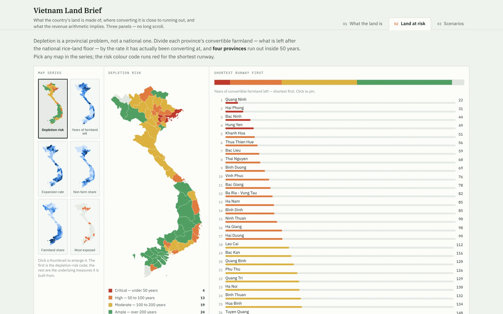
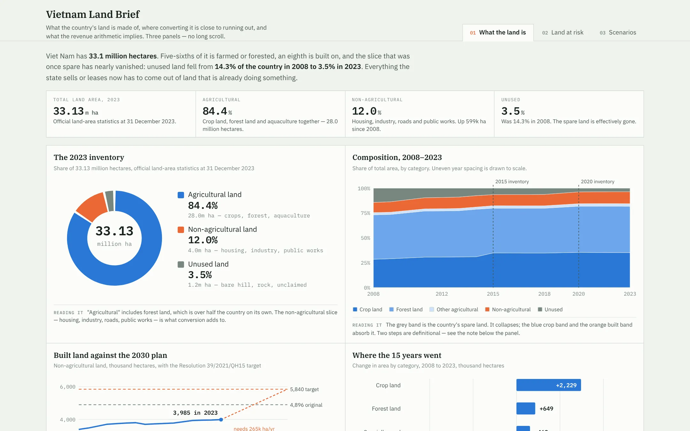
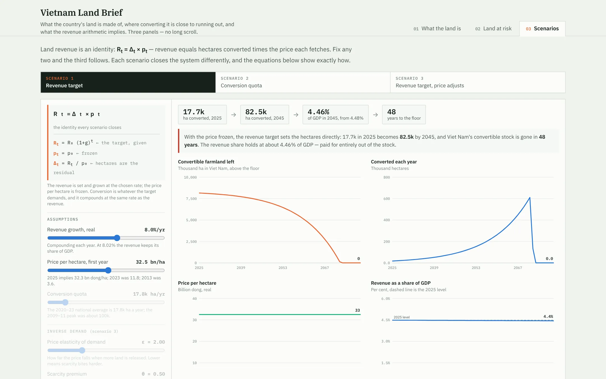
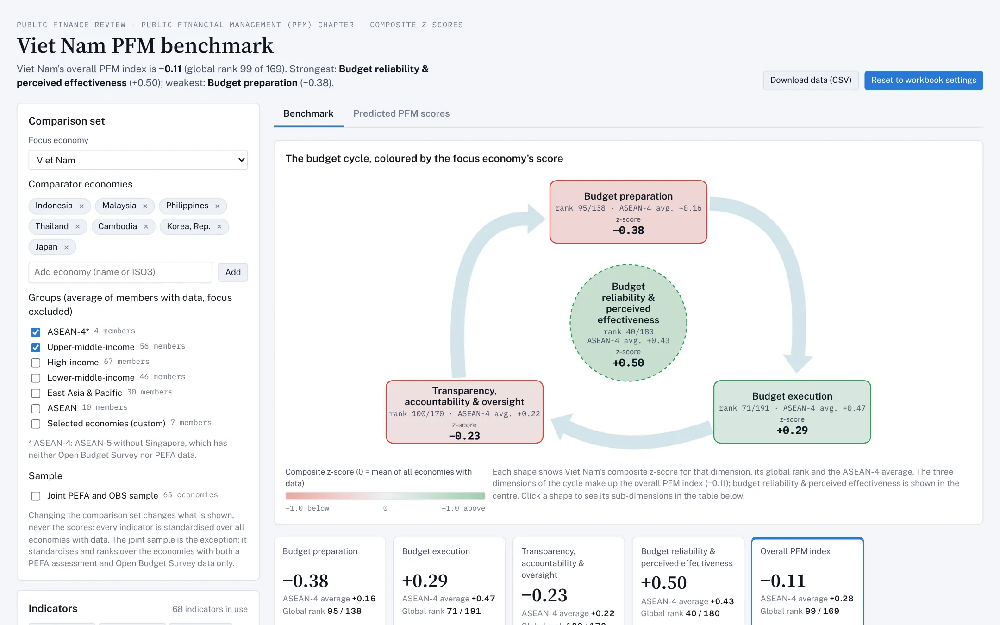
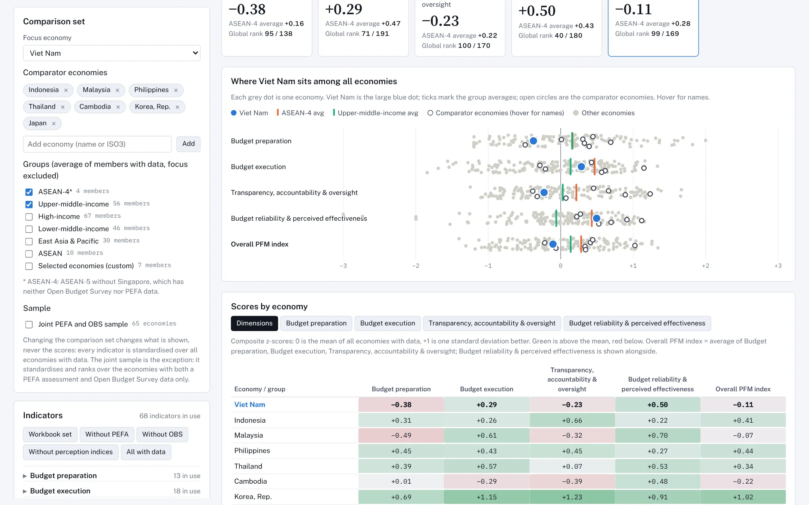
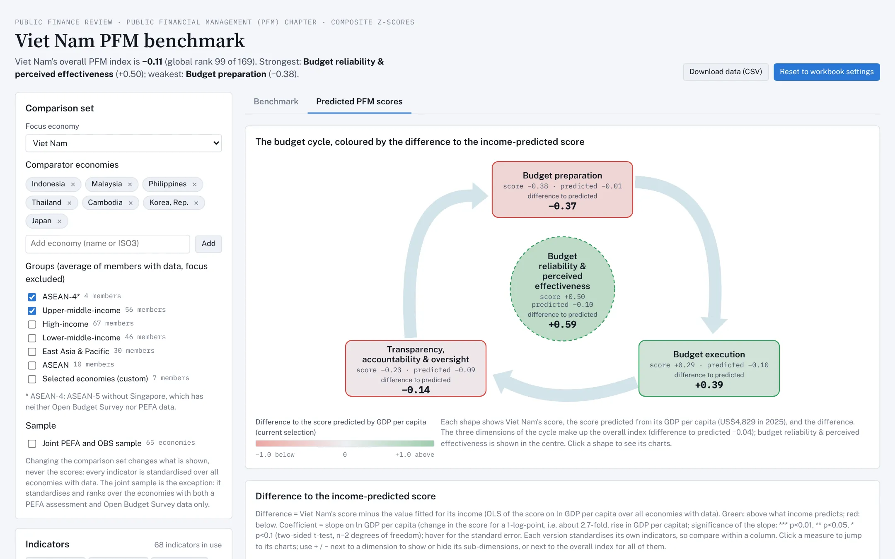
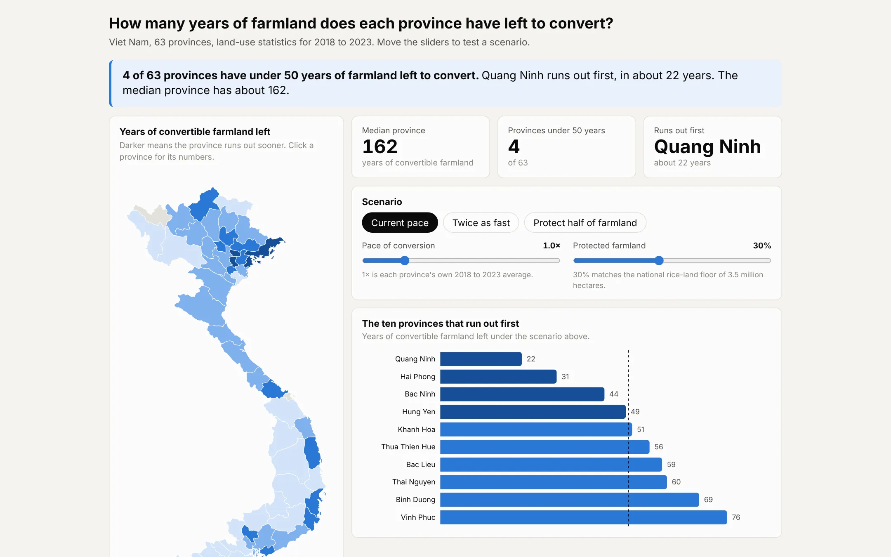
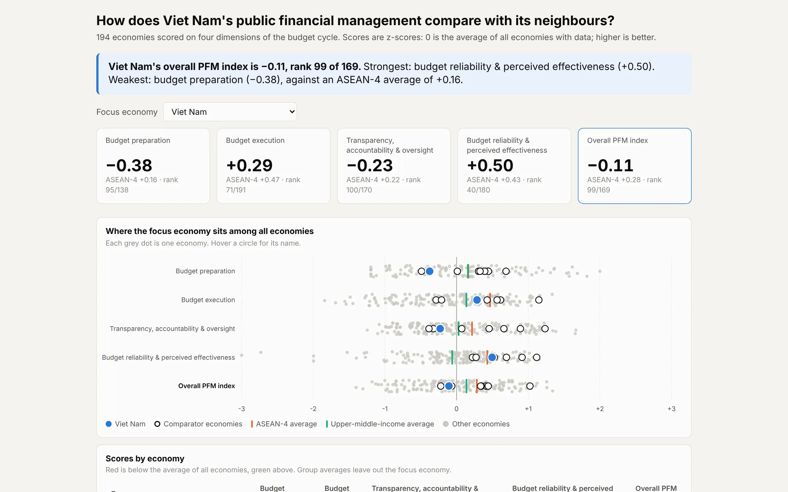
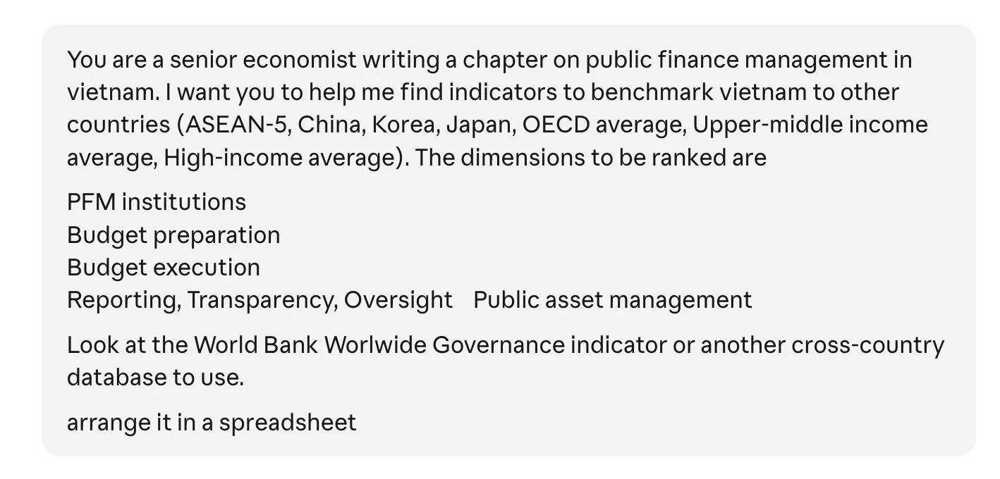
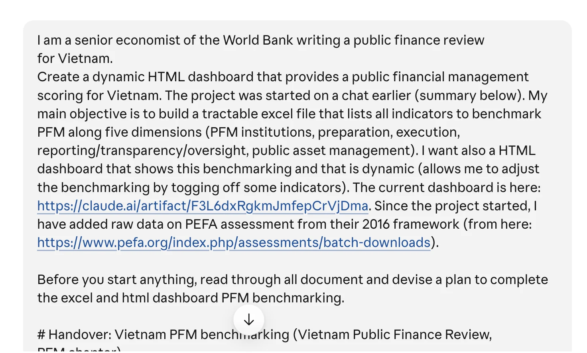

VietLeap Hackathon · UEH · November 2026
Building dashboards that help people decide, and using AI to build them
Sacha Dray · sachadray.github.io/hackathon-dashboard
Live poll
Today
Part 1
What a dashboard is, two real examples, and how to write a prompt that builds one.
Part 2
In pairs: build a dashboard in 15 minutes from the data behind the two examples.
Part 3
What AI changes, setting up GitHub and Claude Code, using AI responsibly, and what you bring.
Part 1 · 12 minutes
1
Why this matters, and the project workflow
What a dashboard is, and what it is not
Two examples, and the prompts behind them
Why you should care
In class
The question is given
The data is clean
One reader: your professor
The output is a grade
At work
You find the question
The data is messy
Readers have two minutes
The output is a decision
Project workflow
1
Question
2
Data
3
Analysis
4
Visualization
5
Decision
Who decides what?
Find it, clean it, check it
The simplest method that answers
The chart or dashboard that carries the message
Recommend, then listen
Plan for loops. Every step sends you back to an earlier one.
The trilemma
Question
Data
Method
Move one corner and the other two move
A great question with no data.
Rich data with no question.
A clever method with nothing to say.
In a hackathon you start from the data: list the decisions it could inform, then pick one.
What is a dashboard
A dashboard is one screen that answers a recurring question for a specific reader, by comparing key performance indicators (KPI) against a benchmark, so that they can decide what to do.
If the reader has to scroll to get the message, it is a report.
The reader comes back when the data updates: monthly, yearly, during a crisis.
Name them: a minister, a provincial director, a fund manager.
A number alone means little. Compare it with peers, a target or the past.
Each element should be able to change what someone does.
a report (read once, top to bottom) · a data dump (every chart, no point of view) · an infographic (one fixed story, nothing to explore)
What is a dashboard
Level
Where are we?
The current value of the few measures that matter, in big numbers.
Quang Ninh has about 22 years of convertible farmland left.
PFMViet Nam's PFM index is −0.11, rank 99 of 169.
Benchmark
Compared to what?
Peers, a target, a threshold, or what income predicts.
4 of 63 provinces are under 50 years; the median has 162.
PFMThe ASEAN-4 average is +0.28.
Trend
Which way is it moving?
Change over time, or under a scenario.
Unused land fell from 14.3% of the country in 2008 to 3.5% in 2023.
PFMHow the scores move when one source of data is left out.
Decision
So what?
The sentence the reader acts on, written at the top.
Build a recurring revenue base before the fastest-converting provinces run out.
PFMBudget preparation is the weakest link: start there.
What is a dashboard
Headline
The answer, in one sentence with numbers
Key number
Where are we?
Key number
Compared to what?
Key number
Which way is it moving?
Controls
Filters and sliders, so readers test their own case
Main chart
The one comparison that supports the headline
Detail
A ranking or table, for readers who want to check
Source, date and method, so every number can be traced
Example 1 · Vietnam Land Brief

sachadray.github.io/vietnam-land
Reader
Finance officials whose provinces pay for investment by converting farmland
Question
How many years can that continue, and where does it stop first?
Design


Example 2 · Viet Nam PFM benchmark

sachadray.github.io/vietnam-pfm-benchmarking
Reader
Ministry of Finance officials and the economists writing the public finance review
Question
Where is Viet Nam strong or weak, against peers and against what its income predicts?
Design


Prompting
Who should the AI be? Name a job, not a personality.
"You are a public finance economist who builds dashboards for ministries."
What does it need to know that is not in the data? Who reads it, what they know, why now.
"The reader is a provincial director with two minutes."
The one thing to produce, and the question or decision it serves.
"Build a dashboard that answers: which provinces run out first?"
Which files, what one row means, the units, known problems, any formula to use.
"Leave out Da Nang: its series has a break."
The format and exactly what goes on the screen, in order.
"One HTML file: headline, map, top-10 chart, two sliders."
Test the data before trusting it: parts against totals, assumptions stated and calibrated, datasets that disagree.
"Do the provinces add up to the national total?"
"Make a dashboard from this data" has none of the six. You get a chart of everything, and no way to know if it is right.
A concrete prompt · Land track
You are a data analyst and web developer who builds clear, one-screen dashboards for government officials.
Provinces raise revenue by converting farmland into housing and industry. Each hectare can be converted only once; about 30% is protected. The reader is a provincial finance director with two minutes.
Build a dashboard that answers: "Which provinces will run out of convertible farmland first, and how sensitive is that to the pace of conversion?"
land_provinces.csv (thousand ha, 2018 to 2023) and vn_provinces.geojson, joined on iso. years left = agri 2023 × (1 − 30%) ÷ yearly conversion. Leave out Da Nang.
One self-contained HTML file: a headline with numbers, a map in four risk bands, the 10 provinces with fewest years, two sliders (pace, protected share), a footnote with method and source.
Before any chart: do the provinces add up to the national totals? State the 30% assumption and calibrate on a known value: Quang Ninh ≈ 22 years. Flag inconsistencies: Da Nang's break, the blank 2021 values.
A concrete prompt · PFM track
You are a public finance economist and data-visualisation designer.
The Ministry of Finance wants to know where its budget system is strong or weak compared with its neighbours. The reader is a senior official who knows the budget but not statistics.
Build a dashboard that answers: "How does Viet Nam compare with its neighbours, and where is the biggest gap?"
scores.csv: D1 to D4 and overall as z-scores (0 = world average, higher is better). Compare with IDN, MYS, PHL, THA, KHM, KOR, JPN and the ASEAN-4 average, leaving Viet Nam out of averages.
One HTML file: a headline, five score tiles, a dot plot of all economies with Viet Nam highlighted, a red-to-green table, a dropdown to change the focus economy.
Before any chart: is overall the mean of D1 to D3? Do both files list the same 194 economies? State the assumptions (z-scores, averages exclude Viet Nam) and calibrate: overall −0.11, rank 99 of 169.
Prompting
1 · Explore
"Describe each file: one row, units, years, missing values, anything wrong. No charts yet."
2 · Build
The six-part brief. One screen, for one reader and one decision.
3 · Improve
"Make the headline state numbers." "Remove what does not help the reader decide."
4 · Check
"Show me step by step how you computed this number. How could this page mislead?"
Most people jump to step 2. Steps 1, 3 and 4 are where you add value.
Prompting · bigger projects
Land brief
PFM benchmark
These prompts aim to rebuild both dashboards from the data files alone, one checked stage at a time. They are on the prompts page, ready to paste into Claude Code.
sachadray.github.io/hackathon-dashboard/prompts.html
Part 2 · 18 minutes
2
In pairs, one laptop, any AI assistant that reads files
Real data: the files behind the two examples
Goal: one screen and a headline you can defend
The challenge
Track A · Land
Which provinces will run out of convertible farmland first?
Reader: a provincial finance director. Files: land by province, 2018 to 2023, and a map of the 63 provinces.
Track B · PFM
How does Viet Nam compare with its neighbours, and where is the biggest gap?
Reader: a Ministry of Finance official. Files: scores for 194 economies on four budget dimensions.
The data
TRACK A · LAND PACK
| File | What it holds | |
|---|---|---|
| land_provinces.csv | Area by province and category: farmland, forest, built, residential | 63 × 5 |
| vn_provinces.geojson | Province shapes for the map, joined on iso | 63 |
| land_national.csv | The whole country by category, 2008 to 2023 | 14 yrs |
| land_finance.csv | Land revenue, GDP, the 2030 plan targets, with sources | 24 |
TRACK B · PFM PACK
| File | What it holds | |
|---|---|---|
| scores.csv | Four dimension scores and the overall index per economy | 194 |
| economies.csv | Names, income group, region | 194 |
| indicators.csv | The 85 indicators: name, source, dimension | 85 |
| indicator_values.csv | Raw value and z-score per indicator and economy | 9,817 |
| gdp_per_capita.csv | GDP per capita 2025, US dollars | 192 |
★ The two files you need for the 15 minutes. Each pack has a README with every column explained. Units: thousand hectares; z-scores (0 = average, higher is better).
Step by step · 15 minutes
1min
Open the handout, download your pack, open claude.ai, attach the two starred files.
2min
Paste prompt 1. Read what it finds wrong in the data.
6min
Paste prompt 2. Check the printed table before the dashboard.
3min
Pick one prompt from list 3. One change at a time.
3min
Prompt 4, then write your headline in one sentence. Show your neighbours.
15:00
sachadray.github.io/
hackathon-dashboard/handout.html
Debrief


Ask of any dashboard
Can I say the answer in one sentence?
Can I trace every number to a file and a formula?
What does it leave out that the reader needs?
Part 3 · 10 minutes
3
What AI changes for economic analysis
Setting up GitHub and Claude Code
Using it responsibly, and what you bring
What AI is changing
Finding, downloading and reshaping data takes minutes, not days.
Cleaning, regressions and scoring engines run from a plain-language request.
A first map of what is known, with sources you can open and check.
An interactive page from a prompt, as you just did, without web-design skills.
Building got cheap.
Choosing what to build
did not.
What is scarce now: the question, the check and the message.
The toolkit
Where you work
An AI assistant that reads, writes and runs the files in your project folder, and explains what it does.
Where it is kept
Your project online, with every version saved, so the team works on the same files and nothing is lost.
Where it is seen
A free public link to your dashboard, for the judges: username.github.io/project
GitHub: free. Students can also apply for the GitHub Student Developer Pack with a university email.
Claude Code: needs a paid Claude plan (Pro or above) or API credits. One account per team is enough.
No paid plan? Do what you did today: claude.ai chat with file uploads, then upload the HTML file to GitHub.
Set-up · GitHub for beginners
1
github.com → Sign up. Use your university email, then apply at education.github.com.
2
"+" → New repository. Name it, choose Public, tick "Add a README".
3
Add file → Upload files. Drag your data in, then "Commit changes".
4
Settings → Collaborators → Add people, by GitHub username.
5
Put the dashboard in docs/index.html. Settings → Pages → Deploy from a branch → main, /docs.
6
After a minute or two: username.github.io/repository
Repository: a project folder, online, with its full history.
Commit: a saved version, with a message saying what changed.
Branch: a parallel copy to try something without breaking the main one.
Pull request: a proposal to merge a branch, which teammates review.
Your first Claude Code session
Ask for a plan before codeYou approve the approach, not 500 lines.
One stage at a timeCheck a number you know before going on.
Read what it changedIt shows each edit; accept only what you understand.
Commit after every working stepAny mistake is then one step from undone.
Write a CLAUDE.mdA file it reads every session: your reader, data and rules.
For the hackathon
Day 1
Write one sentence: who decides what. Check the data can support it. Set up the repository.
Day 2
One working screen early. Spend the afternoon on checks and on the message.
Day 3
Your first sentence is the recommendation. The dashboard is your evidence, on a public link.
Give one teammate a single job: try to break the numbers.
Responsible use of AI
Trace every number back to its sourceRecompute three of them yourself, by hand or in a spreadsheet.
Explain every chart without the AI in the room"The AI did it" is not an answer a judge accepts.
Keep private data out of the prompt and off public pagesNo personal or confidential data in a public tool or a public repository.
Say where AI helpedA line on the page or in the pitch is enough.
Your value proposition
Judgement
Knowing which question matters, and noticing when a result looks wrong.
Connection
Understanding what the reader wants, and what can influence their decision.
(Quality) Time
Hours to go deep on one problem, which senior people rarely have.
Live poll
Start with the decision.
End with the decision.
Handout
data, steps and prompts
Prompts
sachadray.github.io/
hackathon-dashboard/prompts.html
The two examples
sachadray.github.io/vietnam-land
sachadray.github.io/vietnam-pfm-benchmarking
Appendix · Behind the PFM benchmark


Note what the third prompt does before any building: "read through all documents and devise a plan". The plan was approved, then built and checked one stage at a time.